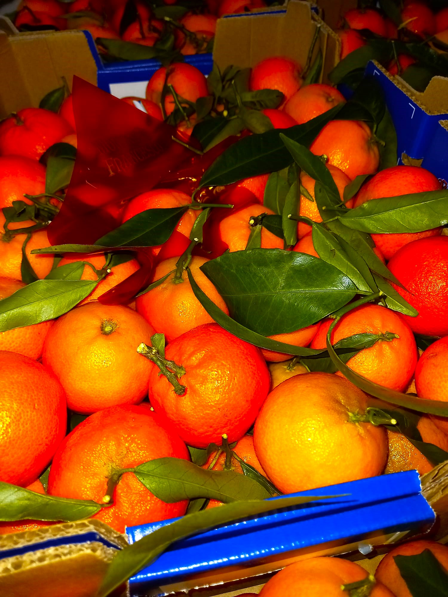
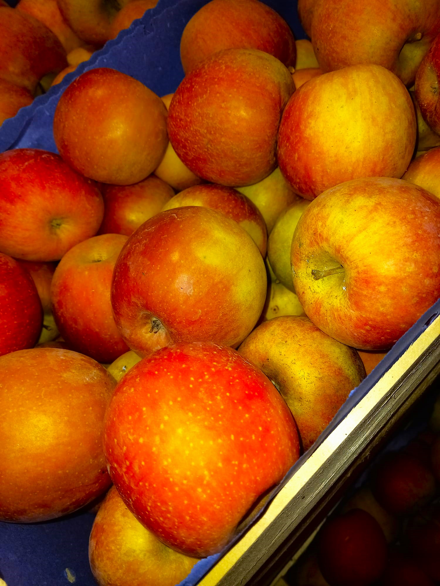
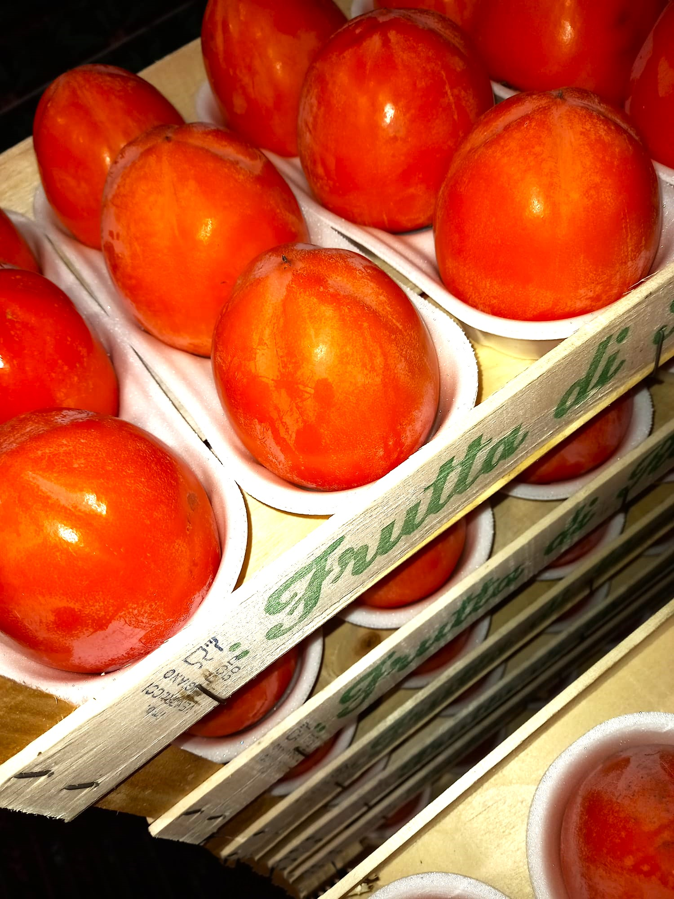
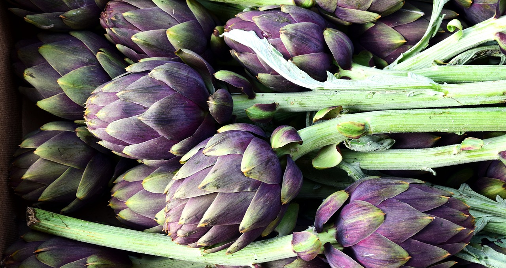
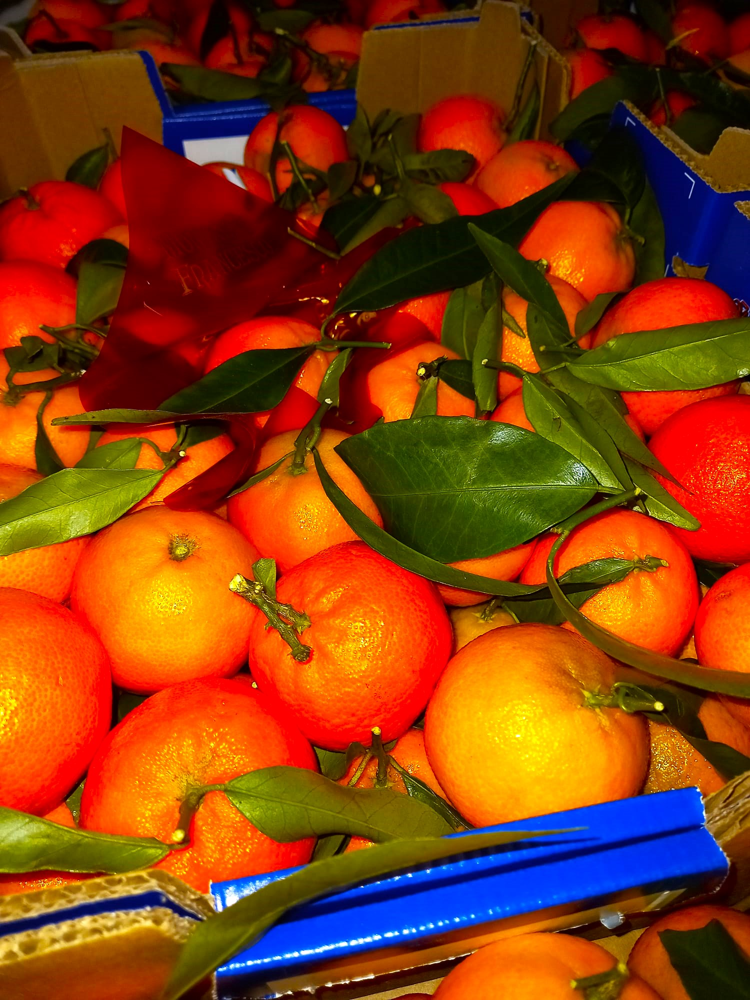
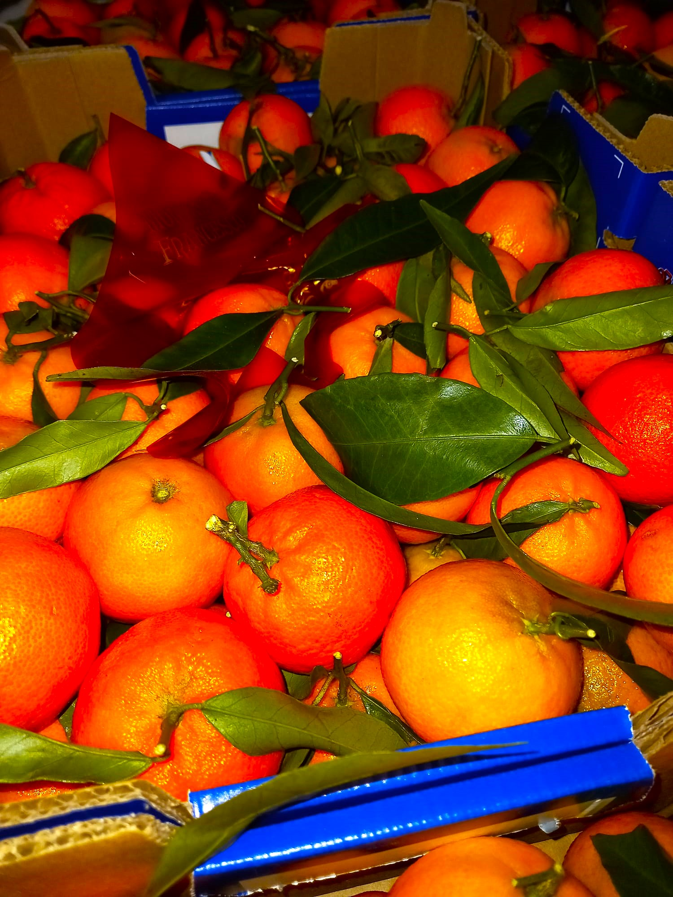
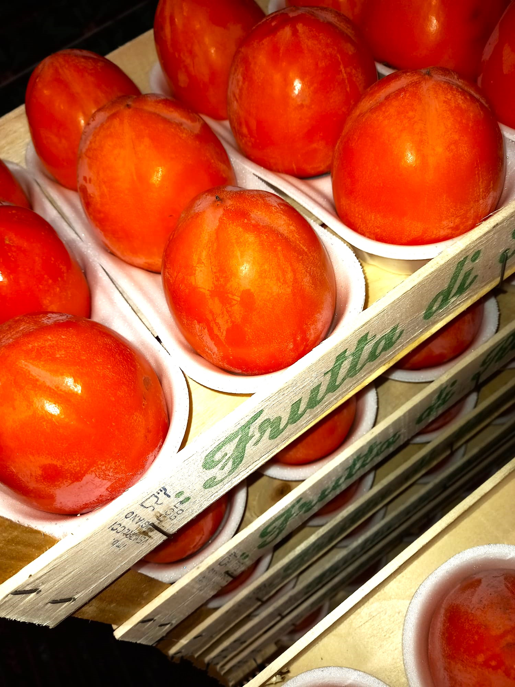
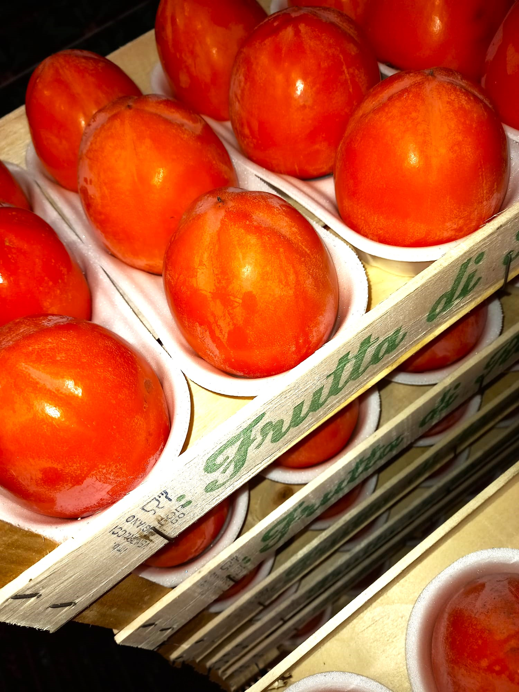

Ci contraddistiguiamo per l'alta qualità dei nostri prodotti. Inoltre seguiamo la naturale stagionalità della frutta e della verdura ad esempio i carciofi spinosi della Sardegna e le pere decane e le pere abate dall'Emilia Romagna.




Puoi effettuare una prenotazione dei nostri prodotti fin dalla sera prima in modo da non rimanere senza il giorno successivo basta selezionare il prodotto e la quantità dalla pagina Prenota i nostri prodotti e aggiungere al carrello e concludere l'acquisto con la tua email.
 


 
